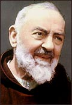
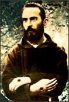

En La Nación sale el anuncio de una muestra fotográfica en el Centro Cultural Borges (Viamonte y San Martín. Tel.: 5 555-5449 , $2) dedicada a Gaudí. (más)
Lo dicho... mala época para escribir ... (1:30 am, recién llego del trabajo)... No me quejo, de todas maneras.
Por allá, como por acá, el tema del más allá no tiene mucha popularidad entre los predicadores... (cuándo fue la última vez que he escuchado a un cura hablar del infierno? .. no me acuerdo)
Dice el LA Times:
- Preachers don't talk about hell anymore:
It's just too negative," said Bruce Shelley, a senior professor of church history at the Denver Theological Seminary. "Churches are under enormous pressure to be consumer-oriented. Churches today feel the need to be appealing rather than demanding."
...."Once pop evangelism went into market analysis, hell was just dropped," said Martin Marty, professor emeritus of religion and culture at the University of Chicago Divinity School. "When churches go door to door and conduct a market analysis ... they hear, 'I want better parking spaces. I want guitars at services. I want to have my car greased while I'm in church.'
No está mal.
El Pater Noster según Simone Weil
(continuación)
"Sea santificado tu nombre"
Su nombre no es pronunciable por labios humanos. Su nombre es su palabra. Es el Verbo.
El nombre de cualquier ser es un intermediario
entre el espíritu humano y ese ser,
la única vía por la cual el espíritu humano
puede captar algo de ese ser cuando está ausente.
Dios está ausente; está en los cielos.
Su nombre es la única posibilidad para el hombre
de tener acceso a El. Es el Mediador.
El hombre tiene acceso a ese nombre aunque sea
tan trascendente.
Resplandece en la belleza
y el orden del mundo y en la luz interior
del alma humana.
Este nombre es la santidad misma; no hay santidad fuera de Él; no tiene pues que "ser santificado".
Al pedir esta santificación, pedimos lo que es eternamente con una plenitud de realidad a la que no podemos agregar ni quitar ni siquiera una parte infinitamente pequeña. Pedir lo que es, lo que es real, infalible, eternamente, con toda independencia de nuestro pedido, es el pedido perfecto.
No podemos dejar de desear, somos deseo, pero a ese deseo que nos clava en lo imaginario, en el tiempo, en el egoísmo, podemos, si sabemos volcarlo íntegramente en este pedido, transformarlo en una palanca que nos arranque de lo imaginario a lo real, del tiempo a la eternidad, fuera de la prisión del yo.
Notitas irrelevantes (y nada confiables):
- Como verá, el que quiera verlo y no lo haya visto, Simone Weil considera el Padre Nuestro compuesto de seis pedidos (usualmente se consideran siete peticiones ; la diferencia surge de que SW. considera lo de "no nos dejes caer en tentación, y líbranos del mal" como un pedido único). Lo anterior ("Padre Nuestro que estás en el cielo") es una especie de invocación inicial. Esto de ahora ("santificado sea tu nombre") es, pues, el primer pedido.
- Es notable que Simone busque con tanta decisión una aplicación trinitaria en una oración dirigida especialmente al Padre. No nos parece mal, aunque tampoco estamos seguros.... Tampoco nos parece mal (aunque estamos aún menos seguros) la aplicación de esta frase al Hijo, por lo del nombre: lo poquito que sabemos de teología sobre la Trinidad, dice al menos algo parecido : la Segunda Persona como Verbo, Nombre, Palabra, Concepto, Hijo (el "concepto" es lo "concebido") del Padre; desde San Agustín, Santo Tomás, hasta Juan Pablo II siempre fue esa la idea...
- Recordar que cuando SW usa la palabra "trascendente" no la usa en el sentido vulgarizado por los periodistas, como "cosa importante"; sino en el de algo radicalmente lejano, separado, inabarcable.
- El Verbo como Mediador: si Dios
está tan lejos (en ese sentido) de nosotros, del mundo,
su Nombre también debería estarlo (pues su Verbo es su mismo ser);
pero por otro lado, sabemos que el Verbo es el Mediador:
lo sabemos porque "por su Palabra se hicieron todas las cosas"
"y dijo Dios «hágase...» ... y se hizo";
si por su palabra fueron hechas estas cosas, y nosotros mismos,
esa hechura tiene la huella del hacedor, y es la realidad
de la mediación. Y eso es particularmente visible en
la belleza y el orden del universo (considerado
como tal), y en el reflejo divino en nuestra alma (su tender
al bien y a la felicidad).
Y claro está, que el Verbo es Mediador, es para el Cristiano la verdad fundamental: pues el mismo Jesús es el Verbo que se encarnó (y que nos enseñó el Padre Nuestro, de yapa). - Dice SW que esta petición es como pedir que dos más dos
sean cuatro; evidentemente, si el Nombre de Dios no es Santo,
qué cosa lo sería ? Pero entonces, ¿por qué pedir eso ?
Dicen muchos que Jesús se refiere a la "santificación entre (o en) nosotros", algo así como que debemos desear y pedir que todos los hombres (y toda la creación) veneremos su nombre, y participemos así de su santidad...
Simone dice otra cosa: dice que es sumamente "edificador" para el hombre aprender a pedir lo que es; y acá pedimos lo que es real con el máximo grado de realidad (por decirlo de alguna manera). - Es una idea recurrente en Simone, eso de considerar
malos los deseos, ilusiones, imaginaciones que
no se asientan en la realidad... hay un "escapismo demoníaco",
diríamos... quizás todo pecado es una forma de escapismo,
de negarse a ver, a aceptar, a obedecer en el amor.
-
...
debemos prohibirnos severamente soñar con el goce de los sentimientos. Es corrupción.
...
La imaginación se ocupa continuamente de cerrar todas las hendiduras por donde pasaría la gracia. ..
...
La obediencia es la virtud suprema. Amar la necesidad.
...
Tratar de amar sin imaginar. Amar la apariencia desnuda y sin interpretación. Lo que entonces se ama es verdaderamente Dios.
Después de haber pasado por el bien absoluto se vuelven a encontrar los bienes ilusorios y parciales, pero en un orden jerárquico que no permite buscar un bien sin preocuparnos por el otro. Ese orden es trascendente con respecto a los bienes que relaciona, y un reflejo del orden absoluto.
...
- Esta petición, entonces, SW la relaciona con el Hijo, la segunda persona de la Trinidad. La próxima la relaciona con el Espíritu Santo, y la siguiente con el Padre.
(continuará ...)
Tropiezo con un viejo post en los archivos de newsgroups de Google. Sobre el eterno problema del aborto, el hombre y esas cosas.
Bastante más interesante que lo que suele encontrarse por ahí (de uno y otro lado (lo que no quita que éste esté de un lado (y del mío))).
Tal vez no elegí una buena época para esto de escribir un weblog ... pocas veces en mi vida el trabajo me dejó tan poco tiempo.
Quedará para mañana, entonces, la continuación del PadreNuestro según Simone Weil.
Este texto sobre Leon Bloy no es nada despreciable.
Y doblemente valioso, considerando que se encuentra muy poco material de y sobre el peregrino de lo absoluto en español..
Una foto en el Clarín de hoy:
-
El video “Bumfights”, que muestra a un grupo de vagabundos peleando entre sí, golpeándose la cabeza contra la pared y arrancándose los dientes, ya vendió más de 250 mil copias. La película tiene consenso en todos los sentidos: es desagradable por donde se la mire, pero mucha gente se muere por verla. Sus cuestionados productores están ganando una fortuna y dicen: “Nosotros no obligamos a nadie a que vea el video”.
...
La oferta online incluye una escena en la que dos “homeless” se pelean en un baño público
y a un tercero que se saca los dientes con una tenaza mientras el camarógrafo se ríe a carcajadas.
... A esta altura, sus productores, Ray Leticia y Ty Beeson, quienes invirtieron 50.000 dólares de su propio pecunio en el rodaje, ya son millonarios.
 Es dudoso que, de todos los
escritores que con los que he tenido
la dicha de "empatizar", alguno me haya pegado más fuerte
que Simone Weil; al menos, en los últimos años.
Y es raro... esa judía izquierdista, cristiana tardía, medio desequilibrada (y
medio hereje ?), que ni siquiera aceptó recibir el bautismo...
-aunque un amigo una vez me dijo: "no es tan raro, considerando tu gusto por Leon Bloy;
esta tipa es tan violenta, tan atrabiliaria como el otro".. )
Es dudoso que, de todos los
escritores que con los que he tenido
la dicha de "empatizar", alguno me haya pegado más fuerte
que Simone Weil; al menos, en los últimos años.
Y es raro... esa judía izquierdista, cristiana tardía, medio desequilibrada (y
medio hereje ?), que ni siquiera aceptó recibir el bautismo...
-aunque un amigo una vez me dijo: "no es tan raro, considerando tu gusto por Leon Bloy;
esta tipa es tan violenta, tan atrabiliaria como el otro".. )
No sé. Lo que sé es que la leo con una enorme devoción intelectual, y cada palabra de sus textos (que insólitamente para mí muchos juzgan "difíciles" o "agotadores de leer") me suenan a verdades resplandecientes.
Se me ocurre poner acá, en entregas, sus comentarios al PadreNuestro.
Probablemente no es lo mejor de ella, ni lo más característico... pero qué me importa.
Se va la primera.
El Pater Noster Simone Weil"Nuestro Padre que está en los cielos"
Es nuestro Padre; nada real hay en nosotros que no proceda de Él. Somos suyos. Nos ama puesto que se ama y le pertenecemos.
Pero es el Padre que está en los cielos. No en otra parte.
Si creemos tener un Padre aquí abajo, no es Él es un falso Dios. No podemos dar un solo paso hacia Él. No se camina verticalmente. Sólo podemos dirigirle nuestra mirada. No hay que buscarlo; sólo hay que cambiar la dirección de la mirada. A Él le corresponde buscarnos.Hay que ser feliz al saber que está infinitamente fuera de nuestro alcance. Así tenemos la certeza de que el mal que está en nosotros, aun si invade todo nuestro ser, no mancha en manera alguna la pureza, la felicidad, la perfección divinas.
Notitas:
1) Simone usa su traducción propia (levemente distinta) del Padre Nuestro en griego.
Ella amaba el texto griego, y le parecía tan hermoso que creía probable que Jesús
hubiera inventado esa oración en ese idioma...
2) De los extremos (heréticos) del Dios como pura trascendencia (el Dios
totalmente incomunicable, lejano y ajeno al mundo) y como pura inmanencia (el Dios
que está tan presente en las cosas, que se termina confundiendo con el mismo universo),
Simona tenía más inclinación por el primero. Y este texto es un ejemplo. Claro está que ambas visiones tienen su parte
de verdad; y me parece que la manera de Simone de acentuar la trascendencia es...
oportuna, digamos... y este texto, también, es un ejemplo... creo
3) Es llamativa -e inolvidable, yo diría- esa especie de antítesis en esa sola frase,
con todas sus ramificaciones: Dios es nuestro padre -nuestro creador, el que nos ama más que nadie,
el que más nos conoce, el único que nos conoce; pero está en el cielo, no está en el mundo;
lo más cercano y lo más lejano a nosotros...
4) El tema de que la misma distancia de Dios contribuye de algún modo a su pureza
(después de todo, santo originalmente quería decir eso: lejano, oculto, incomunicable)
también es muy de Simone. Y si por un lado da para desconfiar, esa obsesión contra las
manchas (Simone era afecta a cátaros y gente de ese estilo); por otro lado -por mi
lado- me la hace más entrañable... Creo que el tema del pecado original fue lo primero
que me hizo sospechar que después de todo el cristinanismo -como mera doctrina, al menos-
tenía lo suyo...
- -Salí a deprimirme outdoors -dijo paseando junto al zoológico, del lado de Sarmiento, el domingo a eso de las cinco y media, hora invernal del atardecer.
Arriba de esa, otra imagen de estos tiempos y de estas comarcas, con un Burger King de fondo, diálogos característicos y gestos tristemente comunes, hasta el automatismo:
-
...un grupo de chicas, la mayor tal vez de doce años, con jeans ajustados, haciendo los mayores esfuerzos que la edad les permitía para llenar el aire de seducción femenina. El hombre de seguridad, uno bajito que llevaba una bandera argentina en el hombro derecho y un palo negro en el lado izquierdo, se dio vuelta para observarlas de la cintura hacia abajo.
- ...los hijos de los Hombres mueren
en verdad, y abandonan el mundo; por lo que se los llama los Huéspedes o los
Forasteros. La Muerte es su destino, el don de Ilúvatar, que hasta los mismos
Poderes envidiarán con el paso del Tiempo. Pero Melkor ha arrojado su sombra
sobre ella, y la ha confundido con las tinieblas, y ha hecho brotar el mal del bien, y
el miedo de la esperanza.
Quenta Silmarillion: Del principio de los días
- ... Me costó dormirme. Siempre me pasaba lo mismo en noches como aquella.
Ese año, mis pedidos habían sido bastante módicos. Un encendedor, una afeitadora eléctrica y una
caja de lápices. A medianoche, me desperté sobresaltado ¿ Había puesto mis zapatos en el pasillo?
Me levanté para comprobarlo.
Y entonces, en la penumbra del pasillo, subrepticio como un ladrón, hincado sobre mis viejos mocasines, vi a mi padre con los regalos. Se levantó lentamente. Durante un largo rato nos miramos con encono.
- De modo que así son las cosas -le dije.
- Dejáme que te explique...
- No, papá -no me importó ser cínico-. Creo que ya es demasiado tarde para explicaciones...
Anduve releyendo ayer algunas de las notas de Dolina. Del -a pesar del tiempo y de las distancias y de todo-
admirado y querido negro Dolina [ y, leyendo y escuchando otras cosas de estos tiempos, saber que
tantos le escupen el epíteto infamente de peronista, me lo hace más querido; aunque
yo no lo sea, y él acaso tampoco; pero dan ganas de ponerse al lado suyo, para recibir parte de los escupitajos
de la canalla].
Y el mismo Dolina termina ese texto, con su desprecio exacto, aunque teñido de una desesperación "romántica"-,
tan típicos en él y tan atípicos en nuestro ambiente:
-
... en nuestro tiempo, cualquier imbécil tiene una confianza en sus opiniones que ya quisiera
para sí el filósofo más pintado.
La incredulidad es -según parece- la sabiduría que se permiten los hombres vulgares.
Nosotros resolvimos apostar una vez más por las ilusiones.
Por eso hicimos nuestras cartitas, pusimos nuestros enormes y pringosos zapatos en las ventanas, en los patios y aun en los jardines.
Y el seis de enero recogimos nuestros sencillos regalos y se los mostramos a los vecinos.
- Mire lo que nos trajeron los Reyes.
Algunos Refutadores de Leyendas nos miraban con envidia, silenciosamente.
Parecidamente, Kierkegaard temía estar en en el estadio estético, mientras creía vivir en el estadio religioso. Pero, al menos, Kierkegaard sabía el fondo de la cuestión; y él tenía la respuesta para Dolina y todos sus Hombres Sensibles:
- El arte es la ilusión previa al saber; la religión
es la ilusión después del saber.
De la lectura del evangelio de hoy (Mt 9:36) :
-
Jesús llamó a sus doce discípulos y les dio poder sobre los malos espíritus para expulsarlos y para curar toda clase de enfermedades y dolencias.
Estos son los nombres de los doce apóstoles: primero Simón, llamado Pedro, y su hermano Andrés; Santiago, hijo de Zebedeo, y su hermano Juan; Felipe y Bartolomé; Tomás y Mateo, el recaudador de impuestos; Santiago, el hijo de Alfeo, y Tadeo; Simón, el cananeo y Judas Iscariote, el que lo traicionó.
Vaya en su descargo que el mismo Jesús había hecho lo mismo, y peor... Y los profetas ... y el Apocalipsis!
Cierto es que cuando uno es uno de los personajes de la historia, uno pagaría por conocer el final...
-
Señor Jesucristo, que dijiste a tus apostoles: "La paz os dejo, mi paz os doy", no tengas en cuenta nuestros pecados, sino la fe de tu Iglesia y, conforme a tu palabra, concédele la paz y la unidad.
Francamente...
No sé si me molestó (para variar) más eso, o el hecho de centrar toda la misa en el Día del Padre... Así, por ejemplo, dejó a un lado el evangelio de la lectura de hoy en su homilía, porque no podía relacionarlo con tan magna fecha (la carta de San Pablo, en cambio, pudo adaptarla...)
Bueh...
De todas maneras, me dirán, no hay que enojarse demasiado de que la Iglesia "se prenda"
con celebraciones de origen tan poco cristiano como el día de hoy; más bien se trata de cristianizar
lo que no nació cristiano (y puede cristianizarse)... después de todo, me dirán, muchas festividades
tradicionales tienen un origen pagano; etc.
Bueno, puede ser.
Como sea, no quiero enojarme hoy, día de la canonización del Padre Pío... y día del padre. Vaya entonces lo que sigue, a propósito de paternidades y santidades...
-
Dios y el hombre.
Los hombres de olvidan de Dios, su padre. Pero ¿quién no olvida a su padre,
quién no olvida su fuente? Sólo amamos a nuestros hijos, sólo nos inclinamos
ante lo que sale de nosotros. En verdad, nuestro padre no cuenta para nosotros,
a no ser que, por un misterioso obrar del alma, se convierta en nuestro hijo.
Es necesario que Dios nazca de nosotros, para que nos acordemos que nacimos de Dios. Pero sólo se puede parir en el dolor...
La filiación divina del hombre tiene como complemento la filiación humana de Dios; y éste es el misterio de la cruz y el secreto de la santidad.
( Por Jesucristo, sabemos que Dios es nuestro Padre; y -en Jesucristo- Dios se hace Hijo del Hombre).
|  |
El Padre Pío de Pietrelcina, (hasta ayer "beato", desde hoy "santo"),
fue canonizado
hoy
por el Papa Juan Pablo II, en Roma.
Sacerdote capuchino, muy famoso por sus estigmas, sus milagros,
... y sus misas y sus confesiones. |
 |
- Algunos links:
- En Zenit: homilía de Juan Pablo II
- La noticia en La Nación
- Especial del Padre Pío en la EWTN
- Especial del Padre Pío en encuentra.com
- El Padre Pío en el sitio del Vaticano
- La ceremonia de canonización en CNN (en inglés)
- El Padre Pío en ACI prensa
- franciscanos.org
- gratisdate.org
- padrecelestial.com
- devocionario.com
- capuchinos
- padre-pio.com (en italiano/inglés)
- padrepio.com (USA)
- más links en esglesia.org
Ayer por la noche, en casa de Suzanne Tezenas, veo a Henri Michaux. Me habla del Padre Pío. Asistió varias veces a su misa. Impresión extraordinaria. El padre Pío habla con Dios; para él, Dios está AQUÍ.
Al cabo de tres días se fue, por miedo a convertirse."Mi camino es muy otro, -me confiesa. Yo soy un artista; tengo mis experiencias personales."
6 de junio de 1961